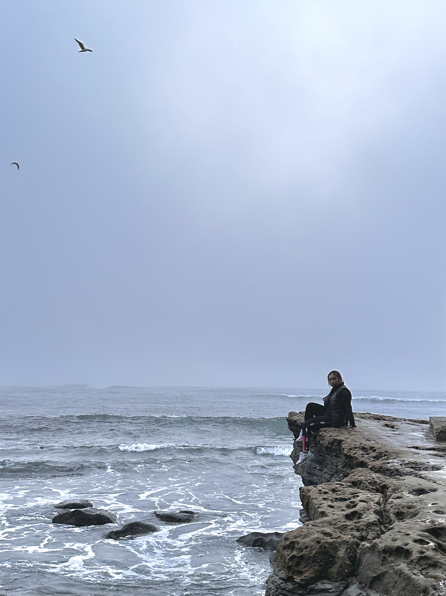

What I would consider one of my best traits is that I am a risk taker. I desire adventure.
I want to see everything the world has to offer, so I like to explore a variety of subjects and activities.
This page gives you a glimpse to a few things that I am passionate about.
My love letter to figure skating
I never actually touched a pair of ice skates until April of 2022, when I attended Colorado College's admitted Student open
house. On that day, I ate dinner with other incoming students and the staff announced that there will be two events for students to attend--an
open skate, or an opera show. I was so curious what it would be like to skate that I immediately ran to the rink afterwards to try it out for myself.
It took me two hours to finally move on the ice after sticking to the wall and falling over and over again. I didn't even look that cool! I ran on the ice. Literally ran!
Even so, that was the spark that led me to pursue a passion in ice skating.
At the beginning of the school year, I found out that Colorado College had a figure skating team open to all levels, so I immediately joined it and attended
every single practice. It was really hard to wake up in the morning, especially when it was dark and cold in the winter, but the thought of it made me so excited
that I was able to fight the desire to go back to sleep and make my way out of the dorm. At the time of writing this, it is March 1st, 2022. I made it from a
complete beginner that ran on the ice to representing my school in an intercollegiate competition at the University of California, San Diego, in just 8 short months.
All of the hard work that I put in to learn the different spins, jumps, and footwork allowed me to officially learn an entire skating program in time for the
last competition of the season. It is an experience that gave me confidence and helped me believe that I really can accomplish anything when I put my mind
to it. It is a sport that brings me so much joy, which is why every moment I spend on the ice is a moment I always fall in love with.
I'm here for the horse
You may have noticed from my github username that I'm really into horses. It's true. I've always loved horses ever since I was a child.
Horseback riding is always a difficult sport for me to get into because of the expenses, so I am only able to ride a few times each summer.
Even so, I really take my time to appreciate the process of working with horses since I don't get to experience them as often as I would like.
The more I worked with these animals, the more I realized how similar they are to people. In an early lesson, I would
need to wake up the horse and get them ready for the day. Sometimes they would pin their ears back in anger as I led them to the hitching fence, grumpy about
waking up so early in the morning. It was just like how I would act when I have to wake up in the morning too. Each horse I rode has a personality too. One
even faked a cough to try and get out of a lesson with me, but the trainer caught on and handed me a crop (don't worry, I didn't smack him. A gentle tap on
his shoulder was enough to make him realize I was serious).
The more horses I rode, the more I realized that I can't connect with every horse. They really are like people in a way. For example, you wouldn't necesarily
get along with every person you meet, even if you really wanted to. In the same way, I might not be the best at riding every horse, even if I wanted to. It's
a clash of personality and ideology. The one I rode the best with was the one I got along with the best.
I reflected on this concept a lot recently.
I feel like there's a personal pressure for me at least, on the standards of a good rider. They should have the proper techniques and skills to ride any horse, but is that
really my goal as a rider? I see all of these people ride horses so well, and sometimes I wonder why I wasn't able to. Maybe it's my lack of consistent training,
but it's not something I can control. Why do I like riding horses? The answer wasn't because I wanted to be the very best rider that can ride any horse given to me.
The reason why I rode was because I wanted to experience a special bond with a horse. That should be the goal I'm striving towards.
I don't need to be the best rider in the world, but I do need to know how to ride the one horse that I can call my own.
Even though I continue to ride lesson horses, I dream of owning my own steed. I want that horse to be my ride or die. We don't need to have the exact same
personalities, but we can work well together if we have the same value of love and exploration. One day, when I am completely prepared--with a stable job and my own property--I'll
look for that horse, my future partner in crime.
"Take me with you, let me see the world!" - Kozuki Oden
That is a quote from Kozuki Oden, a character from the Japanese comic book series. I really like it because he's a character that lived in a country for all of
his life and wanted to go out to the sea so he could experience all the different things in the world.
Just like this character, I want to see the world too. I think there is always something enriching that I am able to learn from
visiting a place I have never seen before, especially visiting places with a deep history that I've learned either through research or at school
because it is incredibly important and meaningful to witness what I’m learning about directly. At Colorado College, the study abroad programs offer a unique
extension to our education because we get the opportunity to learn through experience, so I plan on taking as many study abroad courses as I can and travelling
as much as I can in the future!

Three Dimensional
UNDER CONSTRUCTION
ABout my love for clay and ceramics